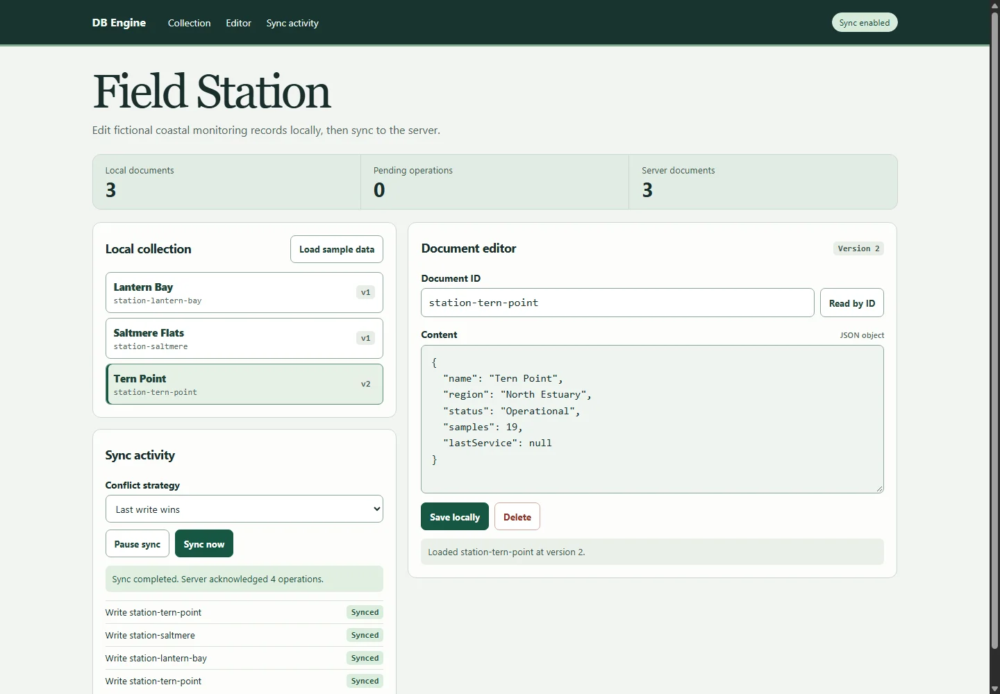
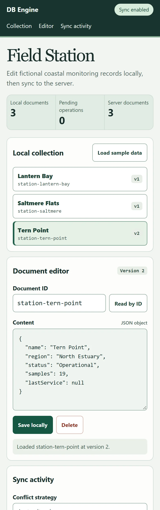

Engineering project · Runtime screenshot
Local-First DB Engine
Save documents offline, inspect an IndexedDB outbox and reconcile changes with a local sync service.
Local portfolio demo
Public source access pending.
Run the local demo
From the prepared project checkout, run these commands and open the address printed by the server. The repository may require access.
cd db-engine
npm ci
npm run build
npm start
# Open http://127.0.0.1:3001

Problem
Offline-capable tools need local writes and a visible sync history when the server is unavailable or data conflicts.
Architecture
A TypeScript document library commits local changes and outbox operations together in IndexedDB. Express accepts typed sync batches and returns snapshots and conflict results.
Engineering decisions
- Commit a document and its queued operation in one browser transaction.
- Deduplicate acknowledged operation IDs in the running server and expose the selected conflict strategy per batch.
Implemented workflow
- Load the fictional Field Station collection with sync paused.
- Edit Tern Point, save locally and reload to inspect the queued version.
- Resume sync and compare the acknowledged document with the server snapshot.
Checks and evidence
Prepared application screenshots and the source README document this workflow. Application checks were not rerun during this portfolio update.
- Reviewed the source README and prepared screenshots in project-2026 on 25 November 2026.
Scope and next steps
- The demo server stores documents, acknowledgements and conflict history in memory, so restart loses that server state.
- Batches can partially commit. There is no restart-persistent operation journal or multi-process file lock.
- The browser uses HTTP sync and does not subscribe to push updates.
Technology
TypeScript · IndexedDB · Express · Vite
Preview availability
Screenshots show the prepared local version. Hosted demos remain pending, and source access may require permission. Local setup requirements and remaining limits are documented above.
← Return to portfolio